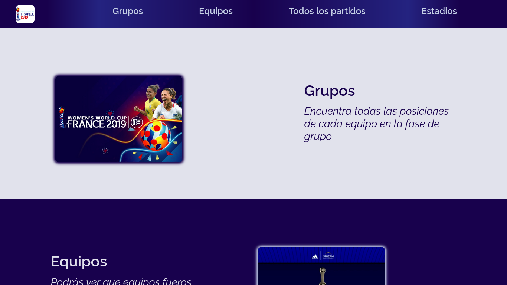
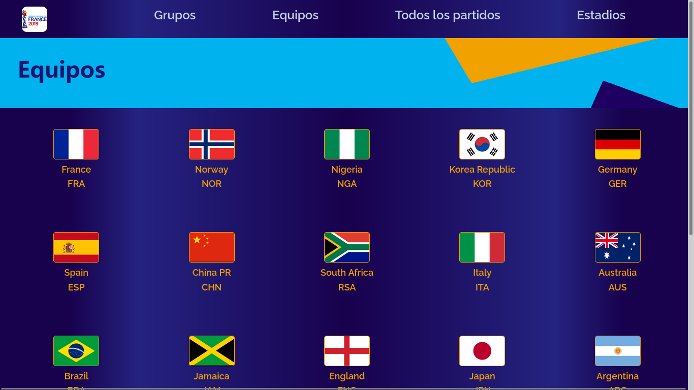
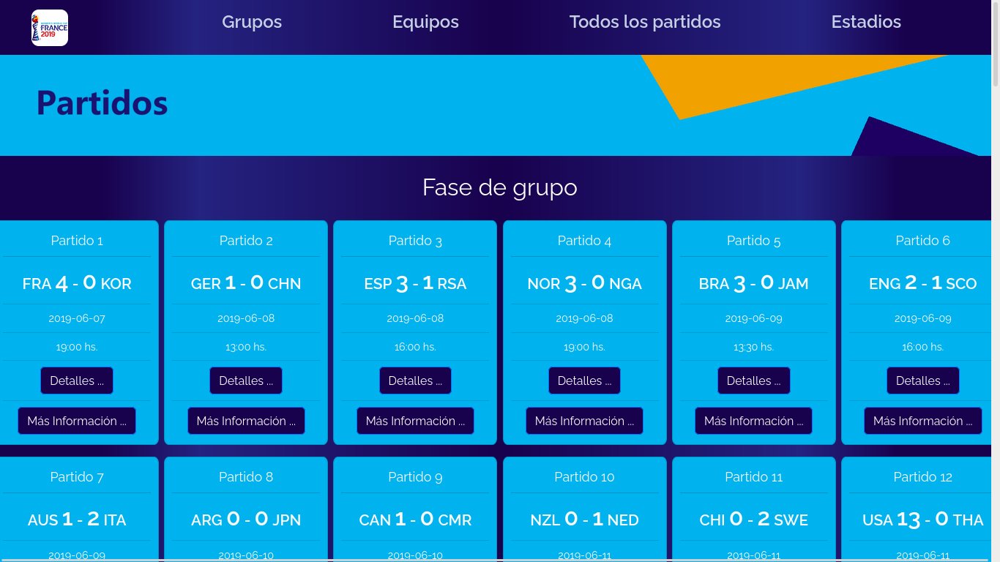
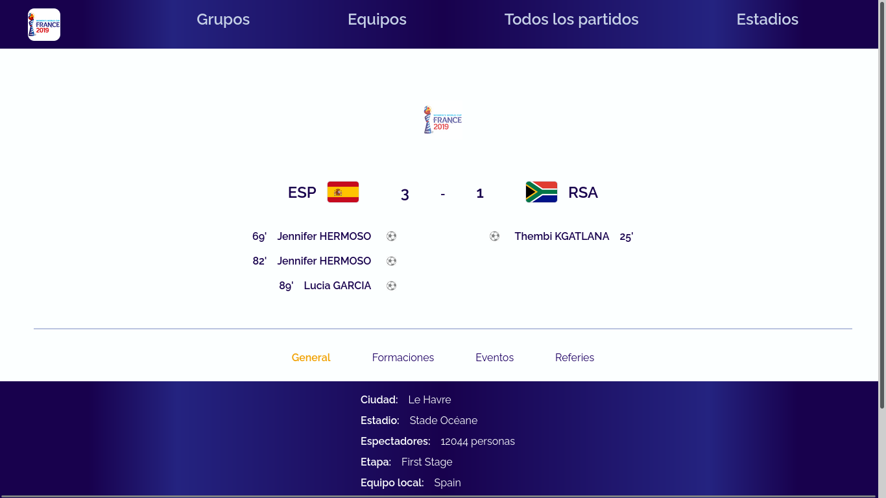
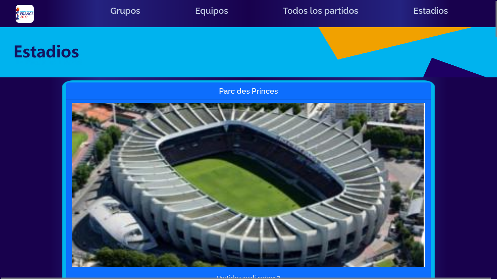

Women's World Cup 2019
A partir de una API pública generado el la URI https://worldcup.sfg.io era posible ver todos los resultados y demás datos y estadísticas del Mundial femenino Francia 2019. La idea de esta aplicacion era poder mostrar la importancia del futbol femenino mostrando las estadisticas de dicho evento. Tal API dejó de funcionar.
Habiendo pasado esto, generamos nuestro propio servidor para poder hacer funcional la página.
Proyecto realizado en conjunto con Gastón Heiler
Tecnologías
Este proyecto está realizado con las siguientes tecnologías
Contenido
Consta de cuatro secciones donde es posible encontrar informarcion desde los equipos que se presentarn, datos y estadisticas de cada partido o resultado del fixture
Grupos
Describe los la tabla de posiciones de cada grupo de la fase de grupo

Equipos
Muestra cada uno de los equipos que conformaron el mundial con informacion de los mismos
Partidos
Da en detalle cada uno de sis partidos
En el botón "...mas info" se detalla cada uno de los partidos con estadisticas del juego
Estadios
Contempla cada estadio utilizado en el mundial y la cantidad de partidos realizados
